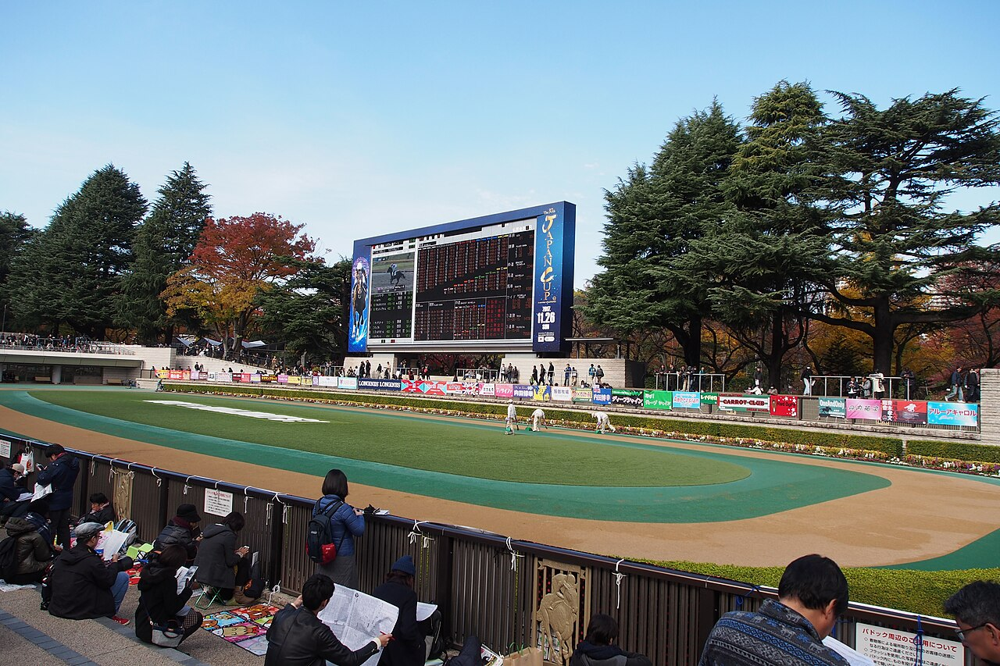

Ombudsman saldrá por el 8 y Calandagan por el 9 en la Japan Cup del domingo en Tokio
La Japan Racing Association (JRA) sorteó el jueves los cajones de la 46.ª Japan Cup, que se disputa el domingo 29 de noviembre sobre 2.400 metros de hierba en el hipódromo de Tokio.

Los dos grandes visitantes saldrán uno junto al otro. Ombudsman, de Godolphin y entrenado por John y Thady Gosden, partirá desde el cajón 8 con William Buick; el campeón del año pasado, Calandagan, de Aga Khan Studs y Francis-Henri Graffard, saldrá desde el 9 con Mickael Barzalona. Ombudsman, que ganó a Calandagan en las Champion Stakes de Ascot en octubre, se inscribió con un pago suplementario y, según la JRA, la Japan Cup será su última carrera antes de pasar a la yeguada; nunca había corrido sobre esta distancia.
Entre los locales, Croix du Nord, ganador del Derby japonés de 2025, sale desde el 4 con Cristian Demuro; Masquerade Ball, segundo por una cabeza el año pasado, desde el 6 con Christophe Lemaire; y Danon Decile, que ganó el Tenno Sho de otoño el 1 de noviembre, desde el 16 con Keita Tosaki. Meisho Tabaru, doble ganador del Takarazuka Kinen, tiene el 3 con Yutaka Take.
El resto de visitantes son Minnie Hauk, de Aidan O'Brien y única hembra del lote, en el 10 con Ryan Moore; el chileno Teao, de John Sadler, en el 12 con Luis Torres; Goliath, ganador del Preis von Europa de 2026 y también de Graffard, en el 17 con Christophe Soumillon; y Ethical Diamond, de Willie Mullins y ganador de la Breeders' Cup Turf de 2025, en el 18 con Ryusei Sakai.
El orden completo es: 1 Redentor (Tom Marquand), 2 Cosmo Kuranda (Yuji Tannai), 3 Meisho Tabaru (Yutaka Take), 4 Croix du Nord (Cristian Demuro), 5 Shake Your Heart (Yoshihiro Furukawa), 6 Masquerade Ball (Christophe Lemaire), 7 Feiern Kranz (Joao Moreira), 8 Ombudsman (William Buick), 9 Calandagan (Mickael Barzalona), 10 Minnie Hauk (Ryan Moore), 11 Wurttemberg (Norihiro Yokoyama), 12 Teao (Luis Torres), 13 Urban Chic (Alexis Pouchin), 14 Tagano Dude (Mirco Demuro), 15 Excite Bio (Kiwamu Ogino), 16 Danon Decile (Keita Tosaki), 17 Goliath (Christophe Soumillon) y 18 Ethical Diamond (Ryusei Sakai).
La carrera reparte 1.090 millones de yenes, de los que 500 millones son para el ganador, y reúne un récord de 11 ganadores de Grupo 1, según la JRA. Calandagan busca ser el primer caballo entrenado fuera de Japón que la gana dos años seguidos. La salida está prevista a las 15:40 hora de Japón, las 7:40 en la España peninsular.
Por Martín Larrañeta